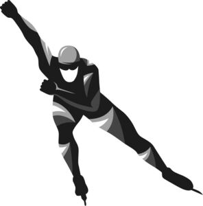

Trade Mark Journal No.2026/012 20 March 2026
WO0000001895073 (9,18,25,28,35,38,41,43)
Office of origin: Switzerland
Date of International Registration:26 September 2025
Date of designation in the UK:
26 September 2025

International priority date claimed: 28 March 2025
(Switzerland)
(832779)
- Class 9
- Sports helmets; glasses, sunglasses, sports goggles; cases, cords and chains for spectacles and sunglasses; binoculars; speed measuring and indicating apparatus; magnets and decorative magnets; electronic tickets; encoded tickets in the form of magnetic cards or bracelets; television apparatus; decoders; hi-fi audio systems; radios; earphones; in-ear headphones; microphones; remote controls; computers; tablet computers; electronic notebooks and agendas; computer keyboards; computer screens; computer cases; computer mice; computer mouse pads; webcams; scanners; printers; photocopiers; telephones, portable telephones; portable telephone covers; smartphones; smart watches; credit card readers; automated teller machines; photographic cameras, video cameras, projectors, karaoke apparatus and programs for karaoke, virtual reality headsets, pre-recorded or downloadable computer software, including computer game software, computer programs and databases, blank or pre-recorded data media for recording sounds or images, holograms, magnetic cards (encoded, including gift certificates), USB flash drives; chip cards; chip or magnetic credit and debit cards; downloadable applications for mobile devices; downloadable electronic publications; downloadable computer software enabling consumers and companies to manage digital collectibles using blockchain-based software technology and smart contracts featuring players, games, recordings, statistics, information, photos, images, game footage, highlights and experiences in the field of ice skating; downloadable virtual goods, namely, computer programs featuring footwear, clothing, headwear, spectacles, bags, sports bags, backpacks, sports equipment, soccer balls; downloadable virtual sports accessories, namely sports clothing, sports shoes, sports bags, pins, game consoles and helmets for use online and in online virtual worlds; downloadable digital files authenticated by non-fungible tokens; solar cells and panels for electricity production; rechargeable batteries.
- Class 18
- Sports bags, leisure bags; travel bags; backpacks; tote bags; satchels; handbags; garment bags for travel; suitcases; luggage tags of leather; toiletry cases (vanity cases) (empty); toiletry bags; leather bags; wallets; business card cases; identity card holders; document cases; purses (coin purses); clothing for pets; collars for pets; leashes for animals; umbrellas; parasols.
- Class 25
- Skating outfits; gloves; shoes; headdresses; beanies; hats; headbands, scarves; shawls; visor caps; sportswear, namely, fleece tops, sweatshirts, sweatpants, tights and leggings, tracksuits, leotards, snow suits, snow jackets, snow pants; warm-up suits; clothing, namely, t-shirts, shirts, polo shirts; jackets; trousers; sweatshirts, hooded jackets or sweatshirts; tank tops; vests; singlets; dresses; skirts; knitwear, namely, jumpers, jackets, beanies; jerseys, jumpers; underwear; bathing suits, dressing gowns; shorts; sweaters; blazers; rainwear; coats; uniforms; neckties; aprons [clothing]; bibs (not of paper); pajamas; play clothes for babies and infants; suspenders; wristbands [clothing] made of silicone; belts.
- Class 28
- Ice skates, ice skate blades, ice-skate blade guards; roller skates; inline skates; skateboards; games and toys; foam hands (toys); sports balls; board games; toys; plush toys; dolls and plush animals; inflatable toys; toys for pets; jigsaw puzzles; balloons; playing cards; sports equipment; bags specially adapted for sports equipment; party hats (toys); video game consoles; hand-held consoles for playing video games; video game joysticks; steering wheels and dance mats for video games; arcade video game machines; scratch cards; kites.
- Class 35
- Marketing and advertising services, namely promoting the goods and services of third parties by organizing the enrollment of sponsors for the sport of ice skating; disseminating advertising for third parties; promoting the sale of goods and services of third parties by distributing promotional contests; promoting the sporting events of third parties in the field of ice skating; provision and rental of advertising space; production and rental of advertising material; marketing and commercial research in the field of ice skating; personnel recruitment services; retail store services and electronic on-line retail store services connected with the sale of a range of products on the theme of ice skating, namely :- Cosmetics, soaps, perfumes, deodorants and antiperspirants for personal use, creams, cleansers, moisturizers and lotions for skin care, face masks, sun and after-sun lotions, make-up, face paint, lip care preparations, shampoos, conditioners, dentifrice, mouthwashes, pre-shave and after-shave lotions, shaving creams, cleaning preparations for household use, detergents for laundry use, synthetic detergents for household use, shoe polish and wax, Sports helmets, glasses, sunglasses, sports goggles, cases, cords and chains for spectacles and sunglasses, binoculars, speed measuring and indicating apparatus, magnets and decorative magnets, electronic tickets, encoded tickets in the form of magnetic cards or bracelets, television apparatus, decoders, hi-fi audio systems, radios, earphones, in-ear headphones, microphones, remote controls, computers, tablet computers, electronic notebooks and agendas, computer keyboards, computer screens, computer cases, computer mice, computer mouse pads, webcams, scanners, printers, photocopiers, telephones, portable telephones, portable telephone covers, smartphones, smart watches, credit card readers, automated teller machines, photographic cameras, video cameras, projectors, karaoke apparatus and programs for karaoke, virtual reality headsets, pre-recorded or downloadable computer software, including computer game software, computer programs and databases, blank or pre-recorded data media for recording sounds or images, holograms, magnetic cards (encoded, including gift certificates), USB flash drives, chip cards, chip or magnetic credit and debit cards, downloadable applications for mobile devices, downloadable electronic publications, downloadable computer software enabling consumers and companies to manage digital collectibles using blockchain-based software technology and smart contracts featuring players, games, recordings, statistics, information, photos, images, game footage, highlights and experiences in the field of ice skating, downloadable virtual goods, namely, computer programs featuring footwear, clothing, headwear, spectacles, bags, sports bags, backpacks, sports equipment, soccer balls, downloadable virtual sports accessories, namely sports clothing, sports shoes, sports bags, pins, game consoles and helmets for use online and in online virtual worlds, downloadable digital files authenticated by non-fungible tokens, solar cells and panels for electricity production, rechargeable batteries, Bicycles, electric bicycles, electric vehicles, electric scooters, motorcycles, motor scooters, automobiles, trucks, vans, camping cars, campers (camper vans), motor buses, trailers, refrigerated vehicles, airplanes, boats, tires, non-skid devices for vehicle tires, namely, spikes and snow chains, wheels, rims, automobile accessories, namely sun visors, roof bars, ski racks, bicycle racks, seat covers for vehicles and cushions, exterior rearview mirror covers, car seats for babies or children, strollers, ice refinishers, Medals, commemorative medals, medallions, coins, commemorative plates, trophies, statues and sculptures, all made of precious metals, medallions, not of precious metal, high-precision timepiece, apparatus for timing sports events, watches, chronometers, wristwatches, watch bands, chronographs (watches), watch cases, clocks, wall clocks, decorative key rings, key rings of leather, lanyards for key holders, jewels, jewelry made of crystal, pins (jewelry), team and player pins (jewelry), necklaces, precious stones, pendants, brooches, bracelets, tie clips and pins, cuff links, plastic jewelry, Printed magazines, brochures, books and newspapers, event programs, timetables (for recording results), educational materials, in the field of sports and entertainment, collectible cards, entry tickets, event albums, paper articles, namely notebooks, diaries (planners), personal organizers, paper pads, checks, stickers, sticker albums, calendars, posters, photographs, postcards, invitation cards, greeting cards, collectible postage stamps, advertising signs and banners made of paper or cardboard, transfers (decalcomanias), airplane tickets and boarding passes, plastic shopping bags, bags of paper, gift wrapping paper, towels of paper, drinks mats, place mat sets and table mat sets made of paper, garbage bags made of paper or plastic, kitchen towels, boxed tissues, handkerchiefs of paper, stationery, envelopes, files, archiving boxes, book covers, bookmarkers, lithography, paintings (framed or unframed), coloring books, writing instruments, fountain pens, pencils, pens, coloring pencils, ballpoint pens, felt marking pens, ink, inking pads, chalks, rubber stamps, pencil sharpeners, paper clips, drawing rulers, adhesive tapes for stationery, stencil plates, drawing boards [paint supplies], debit cards without magnetic codes, made of paper or cardboard, credit cards (not encoded) made of paper or cardboard, passport holders, paper clips,Sports bags, leisure bags, travel bags, backpacks, tote bags, satchels, handbags, garment bags for travel, suitcases, luggage tags of leather, toiletry cases (vanity cases) (empty), toiletry bags, leather bags, wallets, business card cases, identity card holders, document cases, purses (coin purses), clothing for pets, collars for pets, leashes for animals, umbrellas, parasols, Household or kitchen utensils and containers (non-electric), drinking glasses and cups, bottles (sold empty), ice buckets, mixers for beverages (shakers), decanters, plates and dishes, drinks mats, teapots, corkscrews, bottle openers, combs and hair brushes, toothbrushes, dental floss, statues, sculptures, figurines, ornaments and trophies made of terracotta or glass, piggy banks (not of metal), feeding bowls for pets, Bed linen, sheets, duvets, bed covers, pillow cases, towels, blankets, handkerchiefs of textile, flags (not of paper), pennants, banners made of plastic, cloth tablecloths, sleeping bags, Skating outfits, gloves, shoes, headdresses, beanies, hats, headbands, scarves, shawls, visor caps, sportswear, namely, fleece tops, sweatshirts, sweatpants, tights and leggings, tracksuits, leotards, snow suits, snow jackets, snow pants, warm-up suits, clothing, namely, t-shirts, shirts, polo shirts, jackets, trousers, sweatshirts, hooded jackets or sweatshirts, tank tops, vests, singlets, dresses, skirts, knitwear, namely, jumpers, jackets, beanies, jerseys, jumpers, underwear, bathing suits, dressing gowns, shorts, sweaters, blazers, rainwear, coats, uniforms, neckties, aprons [clothing], bibs (not of paper), pajamas, play clothes for babies and infants, suspenders, wristbands [clothing] made of silicone, belts, Skating outfits, gloves, shoes, headdresses, beanies, hats, headbands, scarves, shawls, visor caps, sportswear, namely, fleece tops, sweatshirts, sweatpants, tights and leggings, tracksuits, leotards, snow suits, snow jackets, snow pants, warm-up suits, clothing, namely, t-shirts, shirts, polo shirts, jackets, trousers, sweatshirts, hooded jackets or sweatshirts, tank tops, vests, singlets, dresses, skirts, knitwear, namely, jumpers, jackets, beanies, jerseys, jumpers, underwear, bathing suits, dressing gowns, shorts, sweaters, blazers, rainwear, coats, uniforms, neckties, aprons [clothing], bibs (not of paper), pajamas, play clothes for babies and infants, suspenders, wristbands [clothing] made of silicone, belts, Ice skates, ice skate blades, ice-skate blade guards, roller skates, inline skates, skateboards, games and toys, foam hands (toys), sports balls, board games, toys, plush toys, dolls and plush animals, inflatable toys, toys for pets, jigsaw puzzles, balloons, playing cards, sports equipment, bags specially adapted for sports equipment, party hats (toys), video game consoles, hand-held consoles for playing video games, video game joysticks, steering wheels and dance mats for video games, arcade video game machines, scratch cards, kites, Coffee, coffee-based beverages, tea, tea-based beverages, iced tea, chocolate-based beverages, cocoa, sugar, natural and low-calorie sweeteners, honey, spices, salt, soy sauce, sauces (condiments), cereal-based energy snacks and bars, cereal-based foods for breakfast, bread, chocolate, pastries, confectionery products, cakes, cookies (biscuits), crackers, candy, ices, ice cubes, pizzas, sandwiches, Alcohol-free beverages, juices, flavored juice and juice-based beverages, concentrates, syrups and powders for making soft drinks, mineral and aerated water, non-alcoholic water-based beverages, alcohol-free carbonated beverages, sports drinks and energy drinks, iced beverages, beverages enriched with added vitamins not intended for medical use, beers, low-alcohol beers, non-alcoholic beers, Wines, sparkling wines, alcoholic beverages (with the exception of beer).
- Class 38
- Telecommunication services; services for radio and television programming and broadcasting by satellite, cable or wireless network; electronic messaging; electronic data transmission; Internet access services; discussion forums on the Internet for social networking; providing online chat rooms and electronic bulletin boards for the transmission of messages, comments and multimedia content among users for social networking; providing access to a centralized computer and to computer databases; streaming video and audio material from the Internet; video, audio and television streaming services.
- Class 41
- Organization of sports competitions, cultural and entertainment events and activities in the field of ice skating; provision of training and education courses in relation to ice skating; entertainment services provided during sports events or in connection thereto; online provision of information and statistics on sporting events and performances; timing of sports events; radio and television reporting of sporting events; production and editing of entertainment programs for radio, television and digital media; entertainment services in the form of public viewing of sports events; rental of ice skates; organization of lotteries, raffles and competitions; providing sports installations; amusement park services; fitness club services; production, publication, and/or rental of educational and entertainment audio and audiovisual products; photography services; audio and audiovisual production services; booking of seats and tickets for sports and entertainment events; sports ticket agency services; organization of computer game competitions, including game competitions online; electronic game services provided by means of the Internet; publication of books and electronic journals on-line; entertainment services in the form of Internet chat rooms; entertainment services provided in virtual environments; entertainment services, namely providing online, non-downloadable virtual ice skates, shoes, clothing, headwear, sports equipment, works of art, trophies, toys and access.
- Class 43
- Hospitality services, namely providing food, beverages and accommodation in sports facilities and outside thereof, as well as during sporting events; restaurant (food) services; hotel and temporary accommodation services; booking hotels and temporary accommodation; rental of meeting rooms, namely VIP lounges in sports facilities and outside thereof; catering services, fast-food catering services; snack bar services.
International Skating Union
Representative: Abion GmbH, Wiesenstrasse 9, CH-8008 Zürich, SWITZERLAND